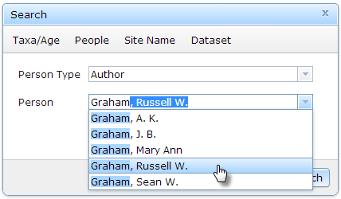

Purpose
|
find datasets associated with a person.
|
Examples
|
- datasets where Grimm, Eric Christopher is the Principal Investigator (PI)
- datasets published by author Graham, Russell W.
|
- In the Search window, click on the Person button.
- Select the Person type to identify the person's relationship to the dataset(s).
- In the Person text box, type a the first few letters a person's family name to bring up a list of suggestions, then select one.

- Click the Search button or press ENTER on your keyboard to run the query.
Created with the Personal Edition of HelpNDoc: Easily create Help documents